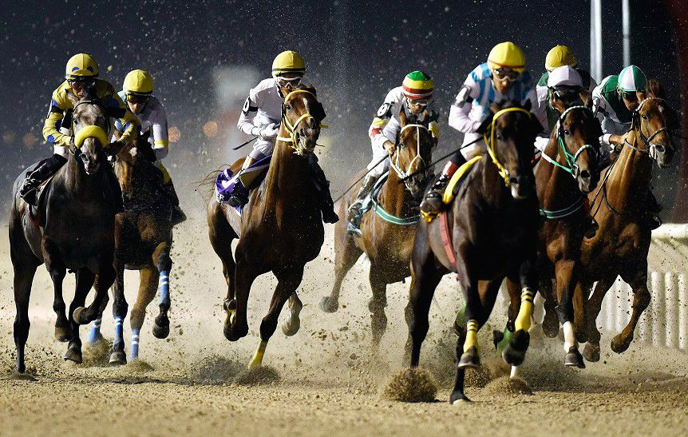
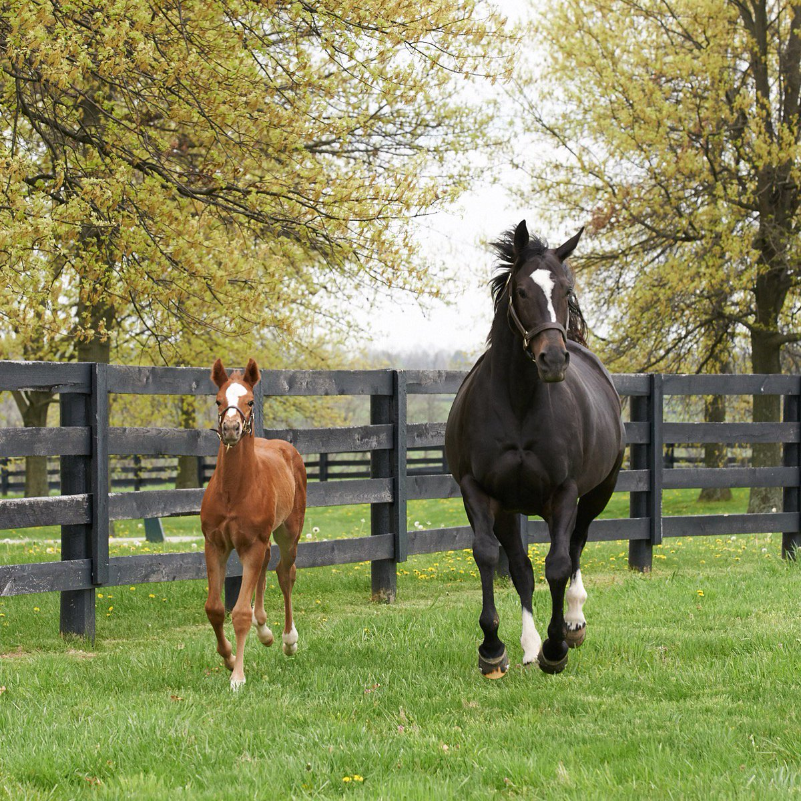
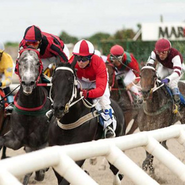
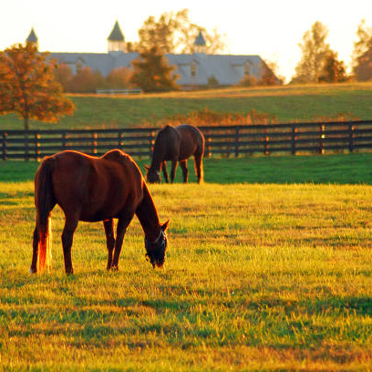
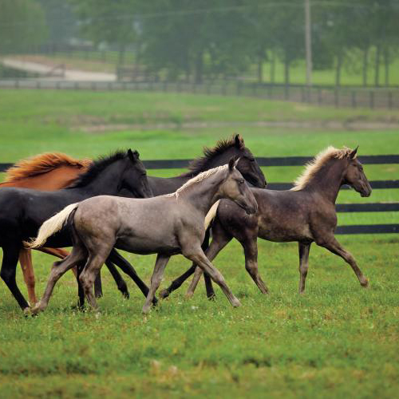

20 años de Madame Julia Ganadora Gran Premio Selección
Madame Julia (Brz) se consagra como la mejor yegua de 2 años al ganar el Gran Premio Selección derrotando a la favorita La Garufa (Brz).

Muy Veloz consagrado "Crack de 2 años"
Muy Veloz es votado el mejor caballo de 2 años del año 2015 por la Asociación de Criadores de Pura Sangre de Uruguay.

Levitante gana su 5ta carrera en Maroñas
El caballo criado por Haras el Palmar gana su 5ta y confirma a L´Elite como una de las mejores madres del pais.

Almirante, crack de su generación en Paraguay
Al ganar su 5ta carrera, el caballo criado en Haras el Palmar se consolida como un pingo en Paraguay.

Mutuca Ave debuta en Maroñas en Polla de Potrancas (G1)
La hermana de Muy Veloz, Mundanal y Muy Agil se mide ante los mejores productos de la generación 2020.